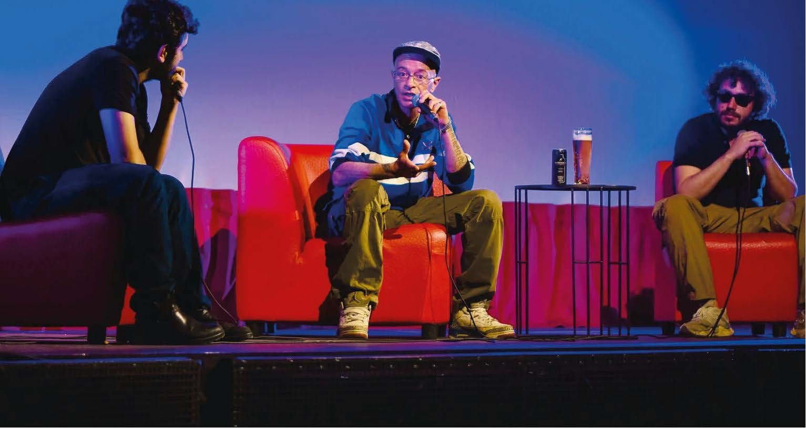

PLURALE
Accanto alla salute fisica e a quella mentale esiste una terza dimensione del benessere: la salute sociale, cioè la quantità e la qualità delle relazioni che ci fanno sentire parte di qualcosa. Tra i giovani adulti, cresciuti in una società che premia la competizione più della cooperazione, è sempre più fragile, e la solitudine viene vissuta come un fallimento personale. Plurale parte da qui per proporre un cambio di prospettiva: dall’individualismo all’interdipendenza, riconoscendo che nessuno si basta da solo.
TESI
SYSTEMIC DESIGN
EDITORIA
2026

Non una cura per la solitudine, ma un dispositivo che restituisce alle persone il tempo e lo spazio per incontrarsi e per imparare, di nuovo, a fidarsi degli altri.
COS’È PLURALE
Plurale è un sistema editoriale che serve a creare le condizioni perché le persone si incontrino e tornino a fidarsi le une delle altre. Al centro c’è una rivista; intorno, un calendario di eventi nei luoghi della città e una piattaforma web che tiene insieme la comunità.
Il progetto risponde a una domanda: è possibile ridare tempo e forma all’interdipendenza, attraverso esperienze partecipate e collettive in cui sospendere, anche solo per un momento, la corsa alla crescita personale?


LA RIVISTA
Una rivista quadrimestrale che prova a superare due limiti: leggere una rivista è un gesto individuale, e in Italia le riviste sono spesso un prodotto elitario. Ogni numero ruota attorno a un verbo, come connettersi, recensire o condividere, e lo racconta attraverso tre redazioni con tre punti di vista diversi: “plurale”, <plurale/> e [plurale].
La copertina cambia a ogni numero e la sovracoperta si apre in un poster da appendere. Dentro, accanto a editoriale, articoli e rubriche, ci sono pagine pensate per essere usate insieme: testi da leggere ad alta voce, tracce per un dibattito e carte conversazionali da staccare.


GLI EVENTI
Ogni numero esce con un evento di lancio, in cui i lettori rispondono a una domanda (“Cosa significa per te connettersi?”) e costruiscono insieme un vocabolario, una galleria e un archivio. Nei mesi successivi la rivista vive in tre formati di incontro ospitati da realtà del territorio: plurale “CLUB”, con la lettura ad alta voce; plurale <TALK/>, con un dibattito guidato; plurale [LAB], con le carte conversazionali.
L’anno si chiude con Plurale Fest, in cui la comunità sceglie insieme i temi dei numeri successivi. La varietà dei formati lascia a ciascuno la libertà di decidere quanto e come partecipare, e il sistema può replicarsi in altre città con nuovi partner.



LA PIATTAFORMA WEB
Il sito raccoglie i numeri, il vocabolario costruito insieme ai lettori e il calendario degli eventi, e permette di abbonarsi o acquistare la rivista: è il luogo in cui la comunità continua a crescere tra un numero e l’altro.